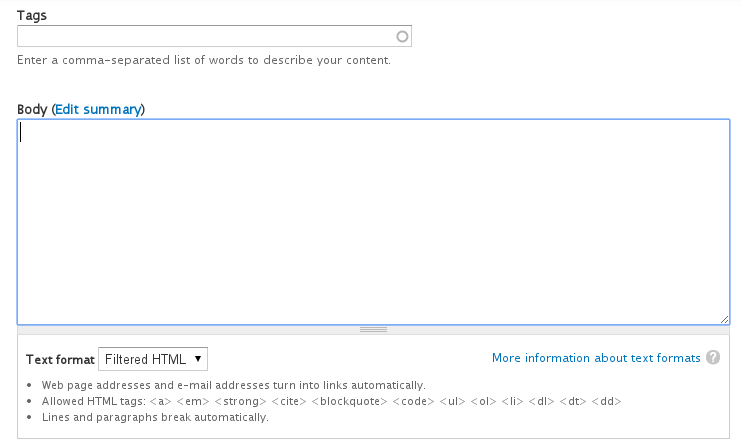
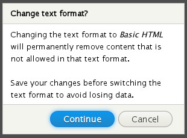
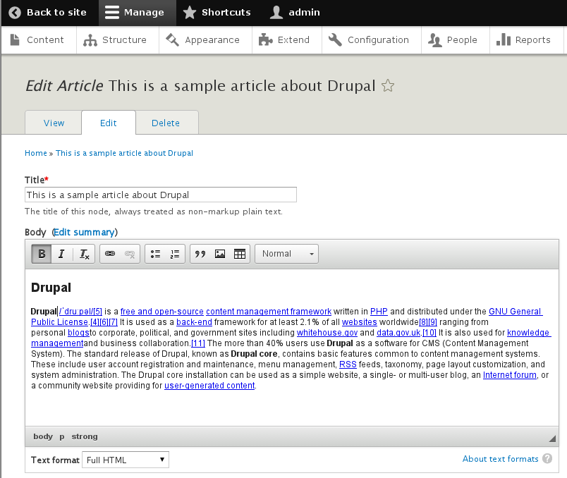
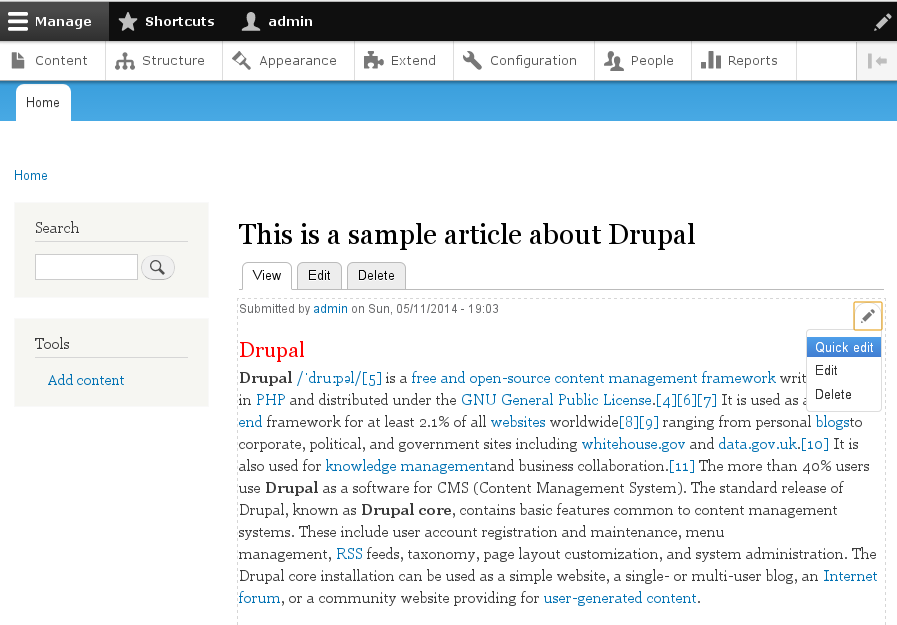
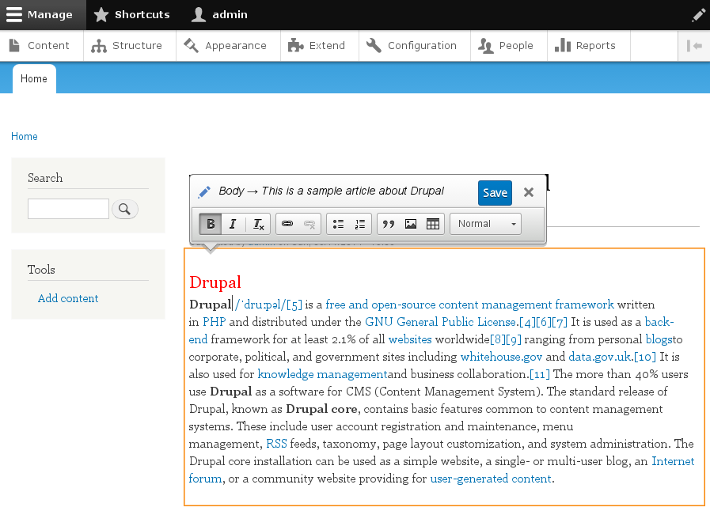
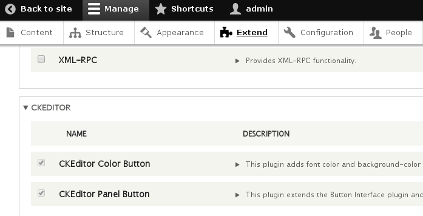
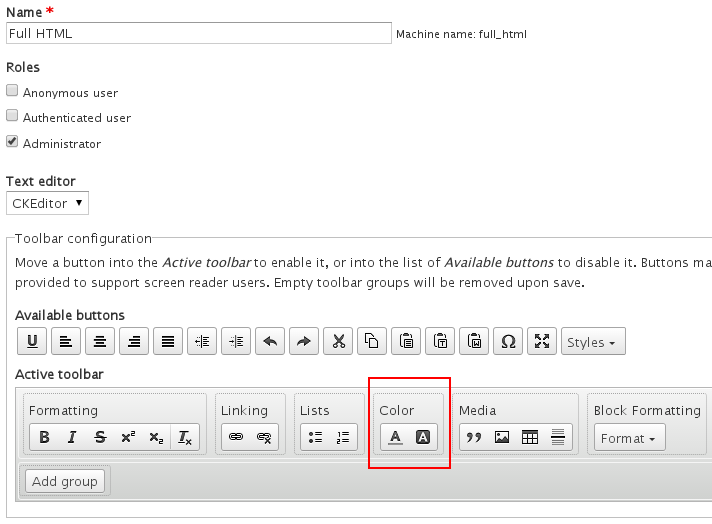
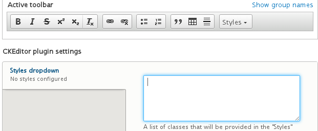

CTO @

Popular WTFs
575 000 x 1.5h = 860 000h available for fun ☺
How CKEditor toolbar configuration triggers an automatic update of Allowed HTML tags list
How automatic update of Allowed HTML tags list works when buttons (features) are removed
Source: Miami-Dade Police Department
No need to submit form and wait for the server-side filter to remove disallowed tags to see the final markup
Switching text formats? Remember about ACF
Live example of how ACF works on different text formats
ckeditor_stylesheets:
- css/ckeditor-iframe.cssClassic editor in action, note the CSS styles in WYSIWYG area:
Handy quick edit option in Drupal 8:
Editing node using quick edit feature:
Note that CSS styles did not change!
How to enable Text/Background Color buttons in Drupal 8?

Enabled Color buttons in Full HTML text format:
* Any plugin that inserts complicated HTML structure suffers from the same issues as the template plugin.
Tutorial: Creating CKEditor Widget
New Image Plugin in Drupal
"Data" form saved in a database:
<img alt="JavaScript Logo"
data-align="right"
data-caption="JavaScript Logo"
data-editor-file-uuid="8025f271-1db8-45cb-9400-f166c4683495"
height="220"
src="/sites/default/files/inline-images/JavaScript-logo.png"
width="220" /><div class="align-right cke_widget_block ..." contenteditable="false">
--------------------------------------------------------------------
<figure class="caption caption-img" data-widget="image" ... >
<img alt="JavaScript Logo"
height="220"
src="/sites/default/files/inline-images/JavaScript-logo.png"
width="220" >
<figcaption contenteditable="true">JavaScript Logo</figcaption>
</figure>
--------------------------------------------------------------------
<span class="cke_widget_drag_handler_container ...">...</span>
</div>FilterCaption filter in Drupal scans for images with data-caption attribute and wraps them with:
<figure class="caption caption-img {{ classes }}">
{{ img }}
<figcaption>{{ caption }}</figcaption>
</figure>| CKEditorDrupal | |
| |
| ⇡ UpcastingDowncasting ⇣ | |
| |
| FilterCaption ⇣ | |
|
|
|
|
|
|
|
|
|
|
Save simple forms, transform using filters in Drupal:
CKEditor Addons repository:
http://ckeditor.com/addons/plugins/allYour own plugins:
(any plugin must implement)
getDependencies(Editor $editor)
An array of required CKEditor plugins
getFile()
Path to plugin.js
getConfig(Editor $editor)
Configuration settings
(for plugins with toolbar buttons)
getButtons() An array of buttons*
labelimage, image_rtl (icons)* list is used only in the administration backend.
(if you wish to provide settings form)
settingsForm(array $form, ..., Editor $editor);

(for plugins enabled under certain conditions)
isEnabled(Editor $editor)
Example: Panel Button
CKEditorPluginButtonsInterface
Example: Color Button
CKEditorPluginConfigurableInterface
Example: Styles Combo
CKEditorPluginContextualInterface
Example: List Style
hook_editor_js_settings_alter(array &$settings)
Including CKEditor skin:
Moono Color
a sample module with a skin for CKEditor in Drupal 8.
Need HTML Filter disabled & ACF enabled?
/**
* Implements hook_editor_js_settings_alter
* @param array $settings
*/
function mymodule_editor_js_settings_alter(array &$settings) {
if (empty($settings['editor']['formats']['full_html'])) {
return;
}
$full_html = &$settings['editor']['formats']['full_html'];
if ($full_html['editorSettings']['allowedContent'] === true) {
unset($full_html['editorSettings']['allowedContent']);
}
}TYPE_HTML_RESTRICTOR) are run before content can be edited in WYSIWYG editorFollow CKEditor on Twitter: @ckeditor